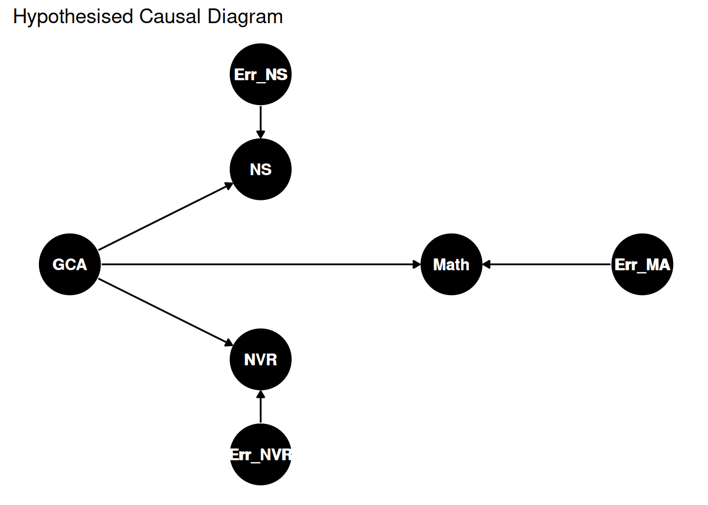

And why controlling for things is harder than you might think.
statistics
cognition
Author
Giacomo Bignardi
Published
June 16, 2024
Many developmental science studies have the following setup.
We start with some cognitive skill that we think is important for learning. For example, lets say its one’s “number sense” measured using a non-symbolic number discrimination task. We hypothesise that this cognitive skill is particularly important for predicting a specific outcome, let’s say mathematical ability.
A problem with cognitive variables is that individuals who do well on one test of cognitive or academic performance, generally do well on others. This phenomenon has been termed the positive manifold.
One explanation for the positive manifold is that individual’s have some general cognitive ability (or “general intelligence”) that causes performance on all other cognitive skills.
So, going back to our example study, a standard way of testing whether our cognition of interest (number sense) is important for our outcome of interest (mathematics) is to run a multivariable regression analysis with number sense and “IQ” as predictors, and mathematics ability as the outcome variable. Usually, “IQ” is measured using a non-verbal reasoning assessment.
What could possibly go wrong? Let’s explore this using a causal diagram.
Residual Confounding
Let hypothesise that general cognitive ability causes one to have better number sense, non-verbal reasoning and mathematics skills, and that neither number sense or non-verbal reasoning have causal effects of mathematics. Let’s assume there multiple other factors that independently cause number sense, non-verbal reasoning, and mathematics skills. Because these other causes are not in our model, we can represent them as random “error” terms.
Code
# Install the necessary packages if they are not already installedif (!require(ggdag)) {install.packages("ggdag")library(ggdag)} else {library(ggdag)}# Define the DAG structuredag <-dagify( NS ~ GCA + Err_NS, NVR ~ GCA + Err_NVR, Math ~ GCA + Err_MA,coords =list(x =c(GCA =0, NS =1, NVR =1, Math =2, Err_NS =1, Err_NVR =1, Err_MA =3),y =c(GCA =0, NS =1, NVR =-1, Math =0, Err_NS =2, Err_NVR =-2, Err_MA =0) ))# Plot the DAG using ggdagggdag(dag, node_size =20) +geom_dag_text() +theme_dag() + ggplot2::labs(title ="Hypothesised Causal Diagram")

In this example, general cognitive ability (GCA) acts as a common cause of number sense (NS) and non-verbal reasoning (NVR). Neither number sense or non-verbal reasoning have direct causal effects on mathematics.
Because we cannot measure general cognitive ability directly, we can only control for non-verbal reasoning. However, because non-verbal reaosning is not a perfect measure of general cognitive ability, it will not perfectly adjust for confounding! Non-verbal reasoning isn’t a perfect measure of general cognitive ability because there are other variables outside of our model that independently cause non-verbal reasoning, which we have termed “Err_NVR” above.
We can simulate what happens in R when we use multivariable regression to test for an association between number sense and mathematics under two conditions. In the first condition, we will also include general cognitive ability as a covariate, and in the second condition we will use non-verbal reasoning as a proxy measure of general cognitive ability.
To simulate this model in our we have to start with exogenous variables (variables that do not have a cause in the model) and work towards our endogenous variables caused by our previously simulated variables:
Let’s run a multiple regression analyses predicting mathematics:
model0 =lm(math ~ ns + gca, data = df_sim)model1 =lm(math ~ ns + nvr, data = df_sim)summary(model0)
Call:
lm(formula = math ~ ns + gca, data = df_sim)
Residuals:
Min 1Q Median 3Q Max
-4.3696 -0.6787 -0.0029 0.6750 4.1727
Coefficients:
Estimate Std. Error t value Pr(>|t|)
(Intercept) -0.004004 0.003170 -1.263 0.207
ns -0.001263 0.003180 -0.397 0.691
gca 0.999897 0.004489 222.725 <2e-16 ***
---
Signif. codes: 0 '***' 0.001 '**' 0.01 '*' 0.05 '.' 0.1 ' ' 1
Residual standard error: 1.003 on 99997 degrees of freedom
Multiple R-squared: 0.4999, Adjusted R-squared: 0.4999
F-statistic: 4.997e+04 on 2 and 99997 DF, p-value: < 2.2e-16
summary(model1)
Call:
lm(formula = math ~ ns + nvr, data = df_sim)
Residuals:
Min 1Q Median 3Q Max
-5.0427 -0.7827 -0.0007 0.7824 4.6588
Coefficients:
Estimate Std. Error t value Pr(>|t|)
(Intercept) -0.006802 0.003662 -1.858 0.0632 .
ns 0.336593 0.002988 112.658 <2e-16 ***
nvr 0.329477 0.002988 110.272 <2e-16 ***
---
Signif. codes: 0 '***' 0.001 '**' 0.01 '*' 0.05 '.' 0.1 ' ' 1
Residual standard error: 1.158 on 99997 degrees of freedom
Multiple R-squared: 0.3329, Adjusted R-squared: 0.3329
F-statistic: 2.495e+04 on 2 and 99997 DF, p-value: < 2.2e-16
In model0 with general cognitive ability as a covariate, the effect of general cognitive ability on math is close to 0 (beta ≈ .0). However when we control for non-verbal reasoning instead of GCA, the effect only decreases slightly (beta ≈ .33).
Because in practice (outside of simulations) we cannot control for general cognitive ability directly, we can only use proxy measures like non-verbal reasoning. However, because non-verbal reasoning is an imperfect measure of general cognitive ability, it doesn’t fully adjust for confounding!
In this example, the reliability of non-verbal reasoning was relatively poor. We can measure its reliability by calculating the squared correlation with general cognitive ability. In this case the reliability is 50%.
Reliability of non-verbal reasoning for measuring GCA:
cor(gca, nvr)^2
[1] 0.4986983
Does increasing reliability of our covariate help?
If we increase the reliability of our covariate (NVR) this will reduce the amount of residual confounding. However, even if reliability is really good, if it is less than 100% reliable (i.e. no measurement error) then we will still see some residual confounding.
Let’s rerun the simulation and increase the reliability of NVR to 90% and see what happens.
model0 =lm(math ~ ns, data = df_sim)model1 =lm(math ~ ns + nvr, data = df_sim)summary(model1)
Call:
lm(formula = math ~ ns + nvr, data = df_sim)
Residuals:
Min 1Q Median 3Q Max
-4.3178 -0.7115 -0.0040 0.7091 4.0562
Coefficients:
Estimate Std. Error t value Pr(>|t|)
(Intercept) -0.005570 0.003313 -1.681 0.0927 .
ns 0.091569 0.003166 28.924 <2e-16 ***
nvr 0.816162 0.004244 192.296 <2e-16 ***
---
Signif. codes: 0 '***' 0.001 '**' 0.01 '*' 0.05 '.' 0.1 ' ' 1
Residual standard error: 1.048 on 99997 degrees of freedom
Multiple R-squared: 0.4538, Adjusted R-squared: 0.4538
F-statistic: 4.153e+04 on 2 and 99997 DF, p-value: < 2.2e-16
In thie case, even when we have a really good measure of general cognitive ability - we still observe some residual confounding. Number sense still appears as a “significant” predictor of math skills, although its effect is much smaller now (Beta ≈ .9)
Solutions
As ever, outlining the problem is easier than fixing it.
Better covariates. Increasing the reliability of our covariate (non-verbal reasoning) reduced the beta coefficient for number sense. However, in practice, it is hard to have perfectly reliable variables. In this example a general cognitive ability could be sought by using many different measures of cognitive and academic skills.
Focus on effect sizes rather than p-values. Even if we do a really good job with covariate adjustment, a litte residual confounding may sneak in, and thus a small relationship between our predictor and outcome might persist. With large datasets, even very small effect sizes may be statistically significant.
A more convincing argument could be made if instead on focusing on if number sense is a statistically significant predictor, we focus on how strongly it predicts math skills. If it is a strong predictor of math before and after adjusting for a set of covariates, a stronger case could be made for its importance. In our example below, the effect is pretty small after adjusting for our more reliable measure of gca.
Better models. In developmental science, we seem to assume that general cognitive ability (or “intelligence”) can simply be “controlled” for using non-verbal reasoning tests. This idea is flawed because research has consistently shown that while tests of non-verbal reasoning are good measures of general cognitive ability - it is not particularly special. We found for example that vocabulary, reading and short-term memory tests can have even stronger relationships with general cognitive skills. Importantly, pretty much any cognitive or academic test can be considered a measure of general cognitve ability.
An alternative approach would be to use a latent variable modelling approach and model general cognitive ability as a latent variable that causes performance on all cognitive variables, and then test if there are residual associations between cognitive tests and outcomes.
Experiments! Confounding is difficult to eliminate in observational studies. Another approach would be to manipulate number sense experimentally, such as via a randomised training study where half the participants train their number sense skills, and the other half do not. Because group assignment (i.e., group = 0 for control, group 1 = for training group) is randomised, no confounding can occur because GCA or other variables cannot cause group assignment. One study did not find that number sense training improves symbolic math skills.
When randomised experiments are impossible, we can sometimes leverage natural experiments or use other causal analysis methods too.
Final note
If our goal is to show that a specific domain of cognition is important for a specific outcome, simply showing that a statistically significant effect when controlling for non-verbal reasoning is a really limited approach. Using effect sizes, or testing generative hypotheses in a more principled way is a much better approach.
There is nothing inherently wrong with non-verbal reaosning assessments, but we should be really careful when using them as proxy measures of general cognitive ability/intelligence/IQ.
Further Reading
Residual confounding is widely discussed in epidemiology & biostatistcs, but there have been some nice articles written for psychology audiences: